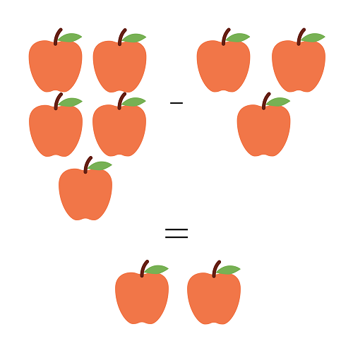

Quick Math
Subtraction Tutorial
Subtraction is written using the minus sign, "-", to indicate the number on the right being subtracted from the number on the left.
For example, pretend you have 5 apples, but you want to have 2 apples in total. Count how many apples you will need to get from 5 to 2. You will need to take away 3 apples to have a total of 2 apples remaining. Therefore, 5 apples minus 3 apples, equals 2 apples.
- Like the example on the right, 5 apples - 3 apples = 2 apples reads as, 5 apples minus 3 apples equals 2 apples.
- 1 - 1 = 0 reads, one minus one equals zero
- 5 - 2 = 3 reads, five minus two equals three
